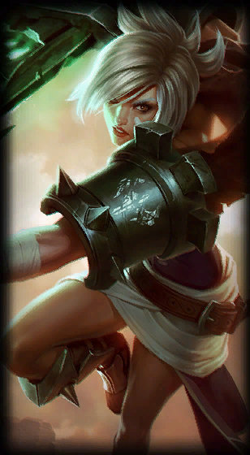
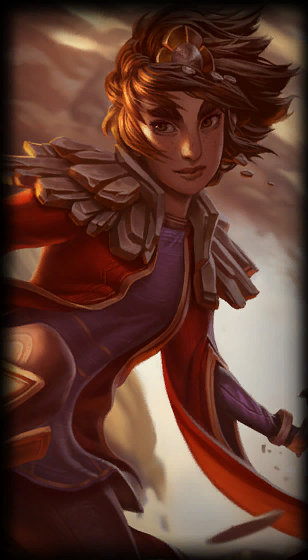
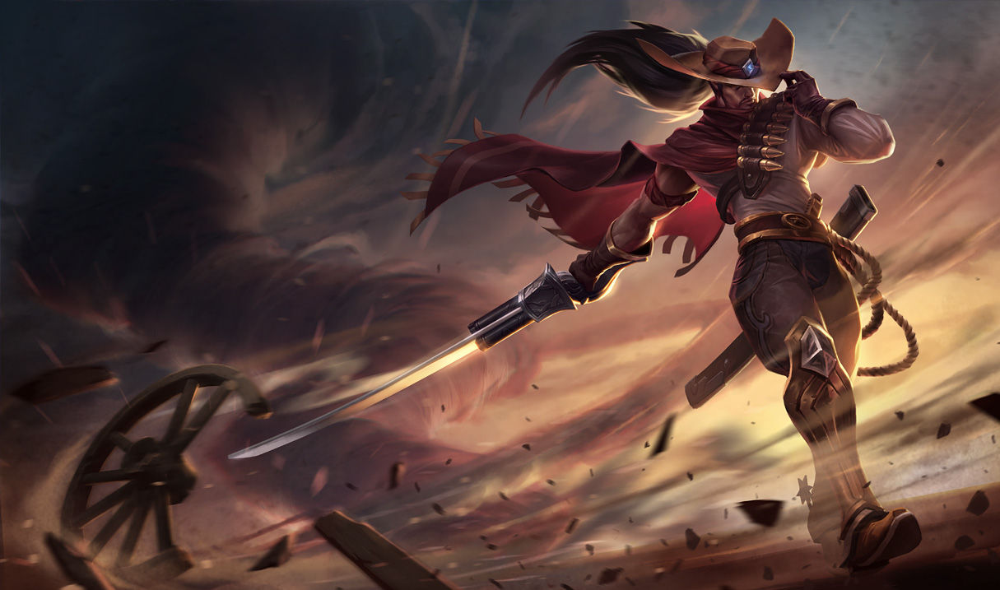
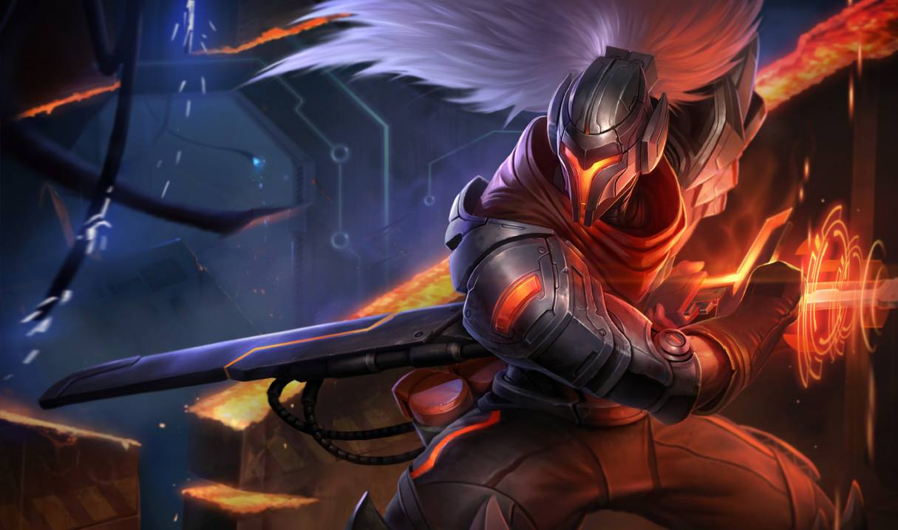

"Death is like the wind, always by my side"
~Yasuo
Tiểu sử
Khi còn nhỏ, Yasuo thường tin vào điều những người trong làng đồn đại về mình: trường hợp tốt nhất, sự tồn tại của anh là sơ suất của thần linh; trường hợp xấu nhất, anh là sai lầm không thể cứu vãn.
Lời đồn nào cũng có một phần sự thật. Mẹ anh là một góa phụ một mình nuôi nấng con trai thì người đàn ông lẽ ra sẽ là cha Yasuo bước vào đời bà như cơn gió mùa thu. Và, khi mùa đông phủ tấm màn lạnh lẽo lên gia đình nhỏ ấy, ông cũng đi mất.
Dù anh trai Yasuo, Yone, có mọi điều Yasuo không có—kính trọng, cẩn thận, lý trí—cả hai lại không thể tách rời. Yone thường xuyên bảo vệ Yasuo khỏi lũ trẻ hay trêu chọc. Song, bù lại cho sự thiếu kiên nhẫn, Yasuo lại có quyết tâm sắt đá. Khi Yone vào học trường dạy kiếm nổi tiếng trong làng, Yasuo đi theo, chờ đợi bên ngoài dưới cơn mưa mùa, cho đến lúc các sư phụ chịu thua và mở cổng.
Trước sự khó chịu của các đồng môn, Yasuo thể hiện được tài năng thiên bẩm, và trở thành môn đồ duy nhất suốt nhiều thế hệ thu hút được sự chú ý của Đại Sư Souma, người cuối cùng nắm giữ phong tuyệt kỹ huyền thoại. Ông già thấy rõ tiềm năng của Yasuo, nhưng dạy dỗ anh học trò ngỗ nghịch này không khác gì kiềm chế cơn gió xoáy cả. Yone năn nỉ em trai gạt kiêu ngạo sang bên, anh đưa cho Yasuo một hạt phong, bài học tối cao về sự khiêm nhường. Sáng hôm sau, Yasuo chấp nhận làm môn sinh, và vệ sĩ riêng, cho Souma.
Khi tin quân Noxus xâm lược truyền đến trường, nhiều người thấy sục sôi trước trận đánh vĩ đại ở Placidium xứ Navori, và háo hức muốn tòng quân. Yasuo khao khát góp lưỡi kiếm của mình cho đại nghĩa, nhưng dù cho các đồng môn đã ra trận hết, anh vẫn được lệnh phải ở lại bảo vệ các trưởng lão.
Cuộc xâm lược biến thành chiến tranh. Cuối cùng, vào một đêm mưa tầm tã, tiếng trống hành quân của Noxus vang tới từ thung lũng gần đó. Yasuo rời vị trí, tin tưởng một cách ngu ngốc rằng mình có thể xoay chuyển cục diện.
Nhưng chẳng có trận đánh nào—chỉ có một nghĩa địa hàng trăm thi thể Noxus và Ionia. Có thứ gì đó kinh khủng và phi tự nhiên đã diễn ra tại đây, thứ gì đó mà không một lưỡi kiếm đơn độc nào đủ sức ngăn chặn. Dường như cả vùng đất đã bị nó làm ô uế.
Choàng tỉnh, Yasuo quay lại trường ngày hôm sau, nhưng ngay lập tức bị các môn sinh còn lại bao vây và chĩa mũi kiếm vào mình. Đại Sư Souma đã chết, và Yasuo không chỉ bị kết tội không hoàn thành nhiệm vụ, mà còn cả tội sát nhân nữa. Anh nhận thấy hung thủ thật sự sẽ không thể bị trừng phạt nếu mình không mau chóng hành động, nên đã mở đường máu trốn thoát, dù biết thế càng khẳng định tội danh của mình.
Giờ anh là kẻ trốn chạy trên mảnh đất Ionia tan hoang vì chiến tranh, tìm kiếm bất kỳ manh mối nào dẫn anh tới chỗ thủ phạm. Trong lúc đó, anh vẫn bị những đồng đội săn đuổi, dồn vào những trận chiến sinh tử. Đây là cái giá anh sẵn lòng trả, cho đến khi người anh sợ nhất ra tay—anh trai Yone của anh.
Ràng buộc bởi danh dự, họ đối đầu nhau. Và khi hai lưỡi kiếm chạm nhau, cặp song kiếm trong tay Yone không phải là đối thủ của ma thuật gió mà Yasuo sở hữu, và chỉ bằng một đường kiếm, kẻ tội đồ hạ gục anh trai mình.
Anh cầu xin tha thứ, nhưng trong cơn hấp hối Yone đã bảo phong tuyệt kỹ gây nên cái chết cho Đại Sư Souma, và Yasuo là người duy nhất biết điều đó. Rồi anh ta nhắm mắt, trút hơi thở cuối cùng trước khi kịp nói thêm bất kỳ điều gì.
Chẳng còn sư phụ hay anh em, Yasuo lang thang qua những ngọn núi, chìm trong cơn say cho quên nỗi đau và mất mát, như một thanh kiếm không còn vỏ. Giữa cảnh tuyết trắng, anh gặp Taliyah, một phù thủy đá từ Shurima đang chạy trốn quân Noxus. Ở cô bé, Yasuo thấy một học trò lạ kỳ, và ở anh, một người thầy còn kỳ lạ hơn nữa. Anh huấn luyện cho cô bé ma thuật nguyên tố, cách định hình đất đá bằng ngọn gió, và cuối cùng cũng thông hiểu những bài học của Đại Sư Souma.
Thế giới dấy lên tin đồn về sự trỗi dậy của một hoàng đế thần thánh ở Shurima. Yasuo và Taliyah chia tay, anh tặng cô bé hạt phong quý giá của mình năm xưa, bởi giờ đây anh đã hiểu rõ bài học trong nó. Khi cô bé trở về sa mạc quê hương, Yasuo khởi hành về làng, quyết tâm sửa chữa những sai lầm của mình và tìm kiếm kẻ sát nhân đích thực…
Bên trong bốn bức tường đá của hội sảnh, cái chết của Trưởng lão Souma được chứng thực chỉ là một tai nạn, do kẻ lưu đày Noxus có tên Riven gây ra—và vì điều đó mà cô vô cùng hối hận. Dù vậy, Yasuo vẫn không thể tha thứ cho lựa chọn rời bỏ vị trí, và tệ hơn, chính lựa chọn đó rốt cuộc đã dẫn đến cái chết của Yone sau này...
Cuối cùng, Yasuo quyết định thực hiện chuyến hành trình đến lễ hội hoa linh tại Weh’le, dù anh chẳng mong đợi những nghi thức gột rửa sẽ chữa lành vết thương trong tâm hồn mình. Nhưng tại đó, anh đã chạm trán một sinh vật quỷ quyệt âm mưu nuốt chửng anh, một azakana gặm nhấm nỗi đau và sự hối hận trong anh.
Nhưng đúng lúc đó, một kẻ mang mặt nạ đã can thiệp, hạ gục con quái vật với cơn thịnh nộ của công lý, và Yasuo chợt nhận ra người đó không ai khác, chính là Yone
Sẵn sàng đón nhận sự trả thù của anh trai mình, Yasuo bất ngờ khi Yone để anh đi, chỉ sau một lời cầu chúc đầy cay đắng.
Không còn gì luyến lưu với Vùng Đất Đầu Tiên, Yasuo hướng về một chuyến hành trình mới, dù anh chẳng thể biết nó sẽ dẫn anh đến đâu, nhưng duy chỉ mặc cảm tội lỗi của anh là thứ kiềm hãm ngọn gió tự do.
Yone

Riven
Taliyah
Trang phục
- Yasuo cao bồi
180RP
- Yasuo siêu phẩm
290RP
- Yasuo True Damage
396RP

Yasuo cao bồi
Trang phục bình thường

Yasuo siêu phẩm
Trang phục sử thi
Yasuo True Damage
Trang phục huyền thoại